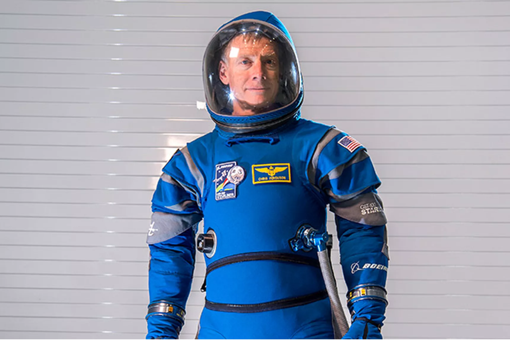
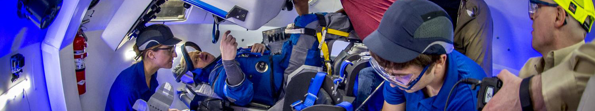

 Today, Boeing unveiled the new sleek, blue spacesuit that astronauts will wear during upcoming missions on the CST-100 Starliner — the capsule that the company is building to take people to and from the International Space Station. The new suits were shown off for the first time this morning during a Facebook Live at Boeing’s facility at NASA’s Kennedy Space Center in Florida. The pressurized outfits are relatively slim and sport a “Boeing Blue” color, making them quite distinct from the bulky, white spacesuits NASA astronauts use during spacewalks.
That might be because the new Boeing suits, designed by David Clark Company, aren’t meant for spacewalks. They are only to be worn when the astronauts are riding inside Starliner to and from the ISS, according to Christopher Ferguson, a Boeing employee and former Space Shuttle astronaut who showed off the suits this morning. The blue suits aren’t built to withstand impacts from micrometeoroid debris, and there aren’t enough layers to protect people from the wide thermal changes experienced in space.
In reality, the suits are needed in case of an emergency. Boeing wants to make sure the astronauts have some form of protection in case there’s a fire, or space debris breaches the hull of the Starliner and pressure is lost inside the vehicle. The suits are meant to keep crew members pressurized and safe until a hazardous situation is under control.
Such a scenario is considered rare, though, so the astronauts should be pretty comfortable while wearing their suits. The new designs weigh less than 20 pounds and are supposedly 40 percent lighter than previous suits, according to Boeing. They will also keep astronauts much cooler than before, thanks to vents that allow water vapor to exit the suit while precious air is kept inside.
The suits sport some nifty new features, too. The gloves are compatible with touchscreens so the astronauts can use the Starliner’s built-in tablets during flight. That’s a big step up from previous glove designs, which caused astronauts’ fingernails to fall off. Boeing’s boots are also lightweight and foldable, unlike the bulky boots of the ACES spacesuit that NASA astronauts wore during launch and landing of the Space Shuttle. The boots even had some design help from Reebok, according to Ferguson.
The helmet design is also rather unique. The helmet for the ACES suit was particularly large and attached to the rest of the suit with a big, metal neck ring that was locked into place. Boeing’s helmet is much smaller and is already partially attached to the suit; simple flaps and zippers are used to connect the front part of the helmet when it is pulled down over an astronaut’s face. And underneath the helmet, astronauts will wear a built-in headset, allowing them to communicate with ground control.
 Passengers won’t be wearing these suits for too long, since the trip to space will be rather short. The CST-100 Starliner is designed to launch on top of an Atlas V rocket, made by the United Launch Alliance, and spend between six to 24 hours getting to the ISS. “If we launch, even on the right day, we may not even have to go to sleep,” Ferguson said. That’s good news for future astronauts, since there’s really no opportunity for bathroom breaks while wearing the suit. Adult diapers will have to be used during transit.
Of course, it’s going to be a while before these spacesuits see any action. Boeing has been building the CST-100 Starliner for NASA’s Commercial Crew program — an effort to launch NASA astronauts on private, American-made vehicles. The first crewed flights of the program were originally supposed to take place this year, but the initiative has experienced funding setbacks and delays. Boeing has pushed back crewed flights twice now, with the first one supposedly taking place in August 2018. And there are still a lot of important milestones that Boeing has to meet before those flights can happen. The company is planning to test out its pad escape system in White Sands, New Mexico in January 2018, followed by the first uncrewed flight in June of that year.
Until those flights take place, NASA astronauts will continue training with the new suits to prepare for future trips to the ISS. "The most important part is that the suit will keep you alive," NASA astronaut Eric Boe, one of four passengers slated to ride on the Starliner for the first time, said in statement. "It is a lot lighter, more form-fitting and it's simpler, which is always a good thing. Complicated systems have more ways they can break, so simple is better on something like this."
Meanwhile, the other company in the Commercial Crew Program, SpaceX, has yet to show off the spacesuits astronauts will be wearing inside the Crew Dragon. Perhaps that unveiling is also on its way (we hope).